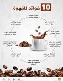

 هل تعلم أن الكافيين يحفز الجهاز العصبي المركزي (CNS)؟ عندما يصل الكافيين إلى دماغك، فإنه يرسل إشارة لإطلاق المزيد من الخلايا العصبية، وبالتالي زيادة استقلاب الطاقة في جميع أنحاء الدماغ.
تكمن فوائد القهوة السوداء في محتواها من الكافيين تمامًا مثل أي قهوة، تحتوي على الكافيين، وهو منبه طبيعي يمنع الأدينوزين، مما يساعدك على البقاء مستيقظًا ومنتبهًا.
ومع ذلك، فإن بساطتها تعني أنها تقدم هذه الميزة دون إضافة السكريات والدهون الموجودة في مشروبات القهوة.
عندما يتعلق الأمر باللياقة البدنية وممارسة الرياضة، يعزز الكافيين الموجود في القهوة مستويات الأدرينالين، مما يساعد على تعزيز القدرة على التحمل، ومساعدتك على تحقيق أهداف اللياقة البدنية الخاصة بك.
القهوة هي كنز من مضادات الأكسدة، مثل حمض الكلوروجينيك، وتساعد هذه المركبات في مكافحة الإجهاد التأكسدي وتقليل الالتهاب ودعم صحتك العامة.
يمكن لمحتوى الكافيين أن يعزز عملية التمثيل الغذائي لديك ويعزز حرق الدهون إلى جانب ذلك، تعمل القهوة على تنشيط جهازك العصبي، مما يجعله يرسل إشارة إلى الخلايا الدهنية في جسمك لتكسير الدهون في الجسم.
تشير الدراسات إلى أن استهلاك القهوة قد يقلل من خطر الإصابة بأمراض مختلفة، بما في ذلك الأمراض التنكسية العصبية مثل مرض باركنسون والزهايمر، والسكري من النوع الثاني، وبعض أشكال السرطان.
ترتبط هذه الفوائد الصحية المحتملة بطبيعة القهوة الغنية بمضادات الأكسدة.
وفقا للدراسات، فإن استهلاك القهوة بانتظام يمكن أن يقلل من خطر الإصابة بالنوع الثاني من السرطان.